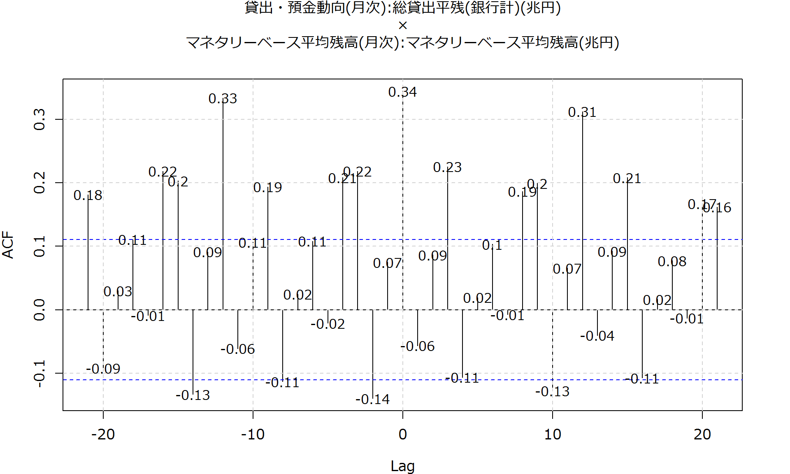

## Period: 1991年07月~2017年07月
## $`貸出・預金動向(月次):総貸出平残(銀行計)(兆円)`
##
## Augmented Dickey-Fuller Test
##
## data: newX[, i]
## Dickey-Fuller = 0.18397, Lag order = 6, p-value = 0.99
## alternative hypothesis: stationary
##
##
## $`マネタリーベース平均残高(月次):マネタリーベース平均残高(兆円)`
##
## Augmented Dickey-Fuller Test
##
## data: newX[, i]
## Dickey-Fuller = 1.7186, Lag order = 6, p-value = 0.99
## alternative hypothesis: stationary## Period: 1991年08月~2017年07月
## $`貸出・預金動向(月次):総貸出平残(銀行計)(兆円)`
##
## Augmented Dickey-Fuller Test
##
## data: newX[, i]
## Dickey-Fuller = -5.3968, Lag order = 6, p-value = 0.01
## alternative hypothesis: stationary
##
##
## $`マネタリーベース平均残高(月次):マネタリーベース平均残高(兆円)`
##
## Augmented Dickey-Fuller Test
##
## data: newX[, i]
## Dickey-Fuller = -3.5478, Lag order = 6, p-value = 0.03844
## alternative hypothesis: stationary
| Item | 2017年02月 | 2017年03月 | 2017年04月 | 2017年05月 | 2017年06月 | 2017年07月 |
|---|---|---|---|---|---|---|
| 貸出・預金動向(月次):総貸出平残(銀行・信金計)(兆円) | 510.7886 | 513.0465 | 514.4925 | 513.0571 | 513.7241 | 516.2539 |
| 貸出・預金動向(月次):総貸出平残(銀行計)(兆円) | 444.3976 | 446.3736 | 447.6018 | 446.3884 | 446.8988 | 449.2177 |
| 貸出・預金動向(月次):総貸出平残(銀行計)前年比(%) | 2.9 | 3 | 3 | 3.3 | 3.3 | 3.4 |
| 貸出・預金動向(月次):総貸出平残/都銀等(兆円) | 210.0668 | 210.7198 | 211.8741 | 210.9588 | 210.5692 | 211.9124 |
| 貸出・預金動向(月次):総貸出平残/地銀・地銀II(兆円) | 234.3308 | 235.6538 | 235.7277 | 235.4296 | 236.3296 | 237.3053 |
| 貸出・預金動向(月次):総貸出平残/地銀(兆円) | 185.474 | 186.5465 | 186.5291 | 186.4729 | 187.2109 | 187.9651 |
| 貸出・預金動向(月次):総貸出平残/地銀II(兆円) | 48.8568 | 49.1073 | 49.1986 | 48.9567 | 49.1187 | 49.3402 |
| 貸出・預金動向(月次):総貸出平残/信金(兆円) | 66.391 | 66.6729 | 66.8907 | 66.6687 | 66.8253 | 67.0362 |
| 貸出・預金動向(月次):総貸出平残/(参考)外銀(円貸出)(兆円) | 2.108 | 2.2207 | 2.2074 | 2.1364 | 2.0856 | 2.0659 |
| 貸出・預金動向(月次):総貸出平残/その他国内対象銀行(兆円) | 4.5193 | 4.5831 | 4.4532 | 4.4994 | 4.5727 | 4.5815 |
| Item | 2017年03月 | 2017年04月 | 2017年05月 | 2017年06月 | 2017年07月 |
|---|---|---|---|---|---|
| 貸出・預金動向(月次):総貸出平残(銀行・信金計)(兆円) | 3 | 3 | 3.2 | 3.3 | 3.3 |
| 貸出・預金動向(月次):総貸出平残(銀行計)(兆円) | 3 | 3 | 3.3 | 3.3 | 3.4 |
| 貸出・預金動向(月次):総貸出平残/都銀等(兆円) | 2.3 | 2.4 | 2.9 | 3.1 | 3.2 |
| 貸出・預金動向(月次):総貸出平残/地銀・地銀II(兆円) | 3.6 | 3.5 | 3.6 | 3.6 | 3.6 |
| 貸出・預金動向(月次):総貸出平残/地銀(兆円) | 3.8 | 3.6 | 3.7 | 3.7 | 3.8 |
| 貸出・預金動向(月次):総貸出平残/地銀II(兆円) | 3.2 | 2.9 | 3 | 3 | 3 |
| 貸出・預金動向(月次):総貸出平残/信金(兆円) | 2.6 | 2.8 | 2.9 | 2.8 | 2.7 |
| 貸出・預金動向(月次):総貸出平残/(参考)外銀(円貸出)(兆円) | 13.6 | 14.6 | 13.1 | 9.1 | 0.4 |
| 貸出・預金動向(月次):総貸出平残/その他国内対象銀行(兆円) | 9.7 | 5.1 | 5.9 | 7.3 | 7.1 |